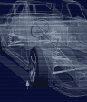
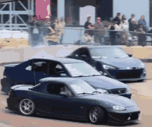

University of Toronto
Placeholder: programme, year, relevant courses.
Coen Hao
Physics, mathematics & statistics, University of Toronto

I am a recruiter
I want to be amazedUniversity of Toronto
Placeholder: programme, year, relevant courses.
Placeholder role, organisation
Placeholder: one result, and the tools used to get there.
Placeholder: languages, tools, methods.
Placeholder: copy a Master Portfolio post from the WordPress site here.
Placeholder: copy a Team OL post from the WordPress site here.
Placeholder: one paragraph and a link.
Things I am building, and things I have built.